非典型不上班的中年男人的一天
非典型是因为从 2015 年的下半年开始就开启远程办公，自此就没有了通勤，无需地铁、公交、步行、骑行等等。
刚开始的时候基本都是上午从睡梦中醒来，下床之后，挪动几步到电脑前，敲敲键盘，动动鼠标一天的工作即刻开启。
9 年后的 2024 年，作为一名虚岁 35 岁且从事互联网行业的中年人，这方面的非典型是在于：不上班！
除了每周一下午的和甲方的例会之外，没有任何会议，规避不必要的沟通和消耗。
目前并尚未达到下面这本书提到的：每周工作 4 小时，但也无妨，这是可以为之持续努力的目标，也不能被轻易达到。
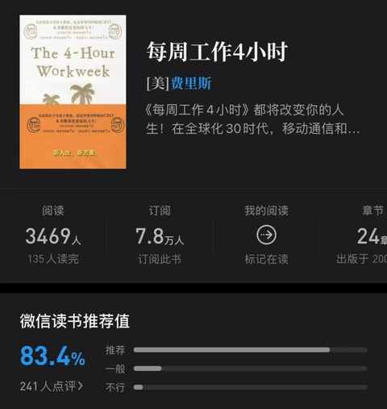
典型的工作日的一天是这样的：
6 点 30：起床
娃上小学之后，大部分时候都能在闹钟响之前醒来，然后提前关掉
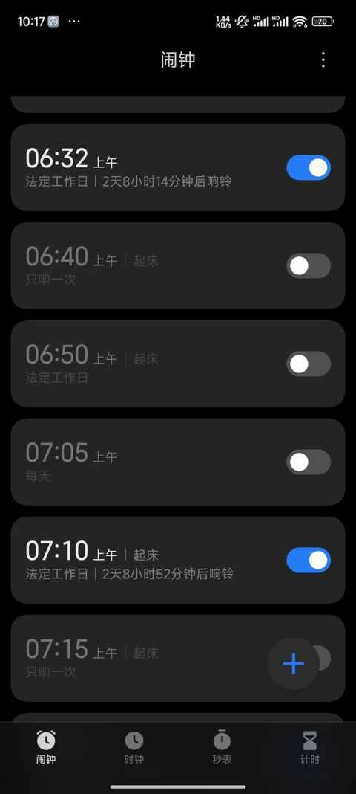
6 点 35：称体重
减肥不易，维持体重更需坚持和毅力，每天起来必称重
6 点 40：做早饭
用一个小蒸锅，水里面放 2-4 个鸡蛋，有时候也会加上一根玉米，蒸笼里面一般是放6 个蒸饺、紫薯、红薯、包子、馒头等，再煎两个鸡蛋，切切菜，洗洗水果……
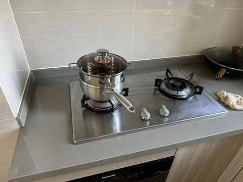
有一说一，这个蒸锅太适合三口之家了，居家必备的厨房好物
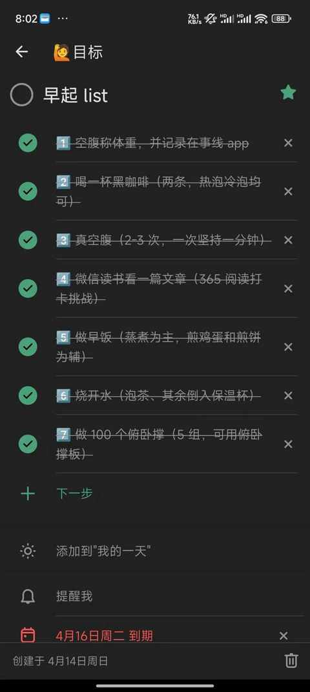
俯卧撑和看文章只坚持了几天就觉得没必要，现在换成了在做早饭的时候听播客，效果也不错
7 点 10：洗漱+换衣服
基本上 5-10 分钟搞定
7 点 25：送娃上小学
不下雨就骑电动车，下雨就开车，冬天开车多点，其他季节能不开就不开，单程 15-30 分钟
7 点 45：返程回家 或 去健身房
考虑到不能让时间过于碎片化，把私教课的时间从 9 点 30 - 10 点 30 调整为 8 点 30 到 9 点 30。
如果非健身日
8 点 30：和老婆一起吃早饭
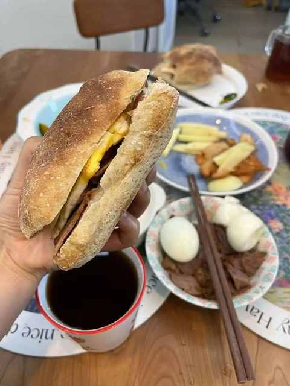
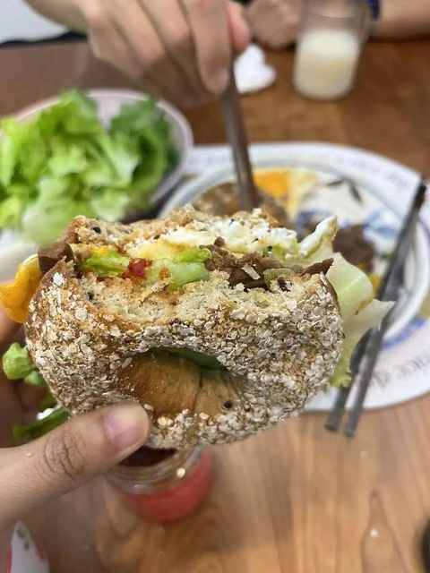
最近是各种 diy 的三明治：鸡蛋、肉、面包、辣酱、生菜等，也会有：热茶、牛奶、水果、紫薯、红薯、玉米、饺子、包子……
如果是健身日
8 点 30：在教练的指导下开练
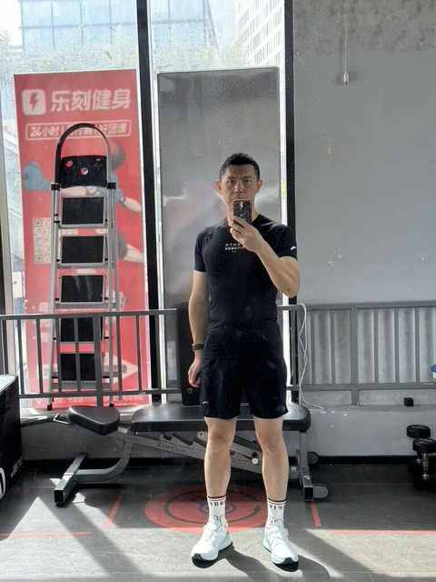
练后自拍练习同样重要
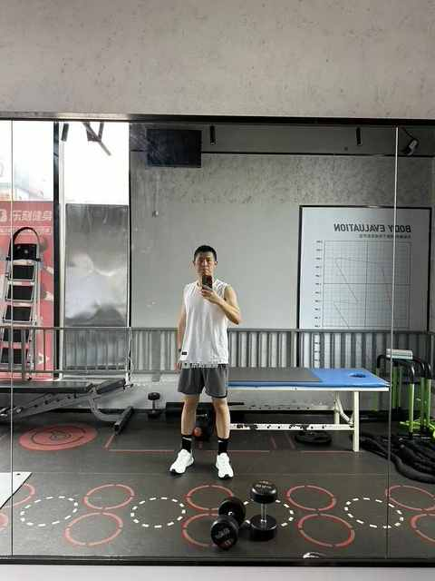
9 点 50：开启一天的工作
如果没有特别的事情需要处理，会网上冲冲浪：刷刷微博、抖音、看看B 站上关注的 up 是否有更新
如果是在非健身日也没有特别的工作要处理
10 点 40：出去跑步，下雨就找个跟练视频活动活动
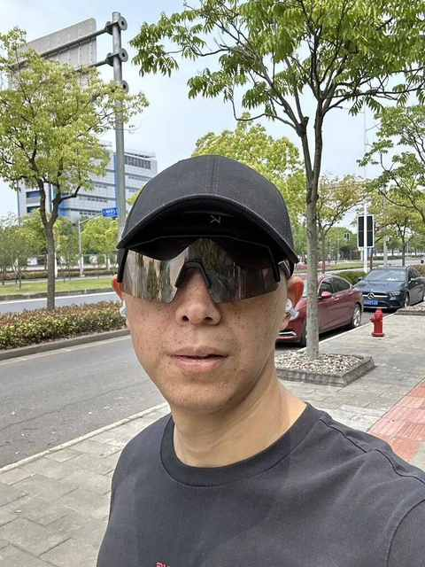
跑步的过程中听播客为主，偶尔听歌，跑固定路线，5-15km 不等
11 点 50：做午饭
水煮、爆炒、炖菜都试过，还是清炒最好， 逐步能做到：量大管饱和营养均衡，热量也能控制在一定范围
12 点 20：吃午饭
一般在 B 站找几个视频，边看边吃
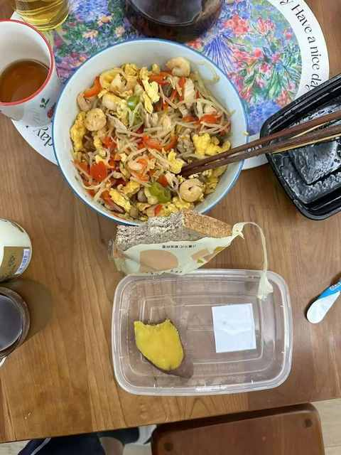
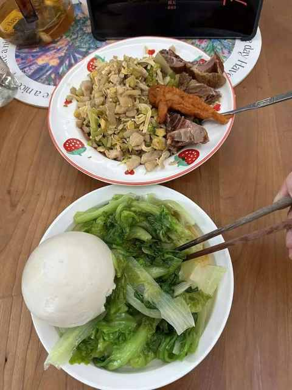
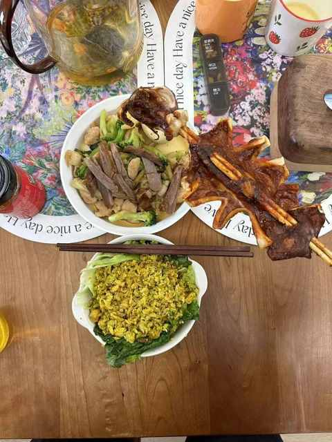
12 点 50： 洗碗+做家务
洗碗基本 5-10 分钟搞定，一个人吃没多少碗筷，一般不用洗碗机，有时候会晾衣服和丢垃圾
13 点 10：阅读 60 分钟左右
电子书为主，微信读书的 iPad客户端支持双栏显示。
如果中午吃多了，上午也没有跑步，可能会出去骑车
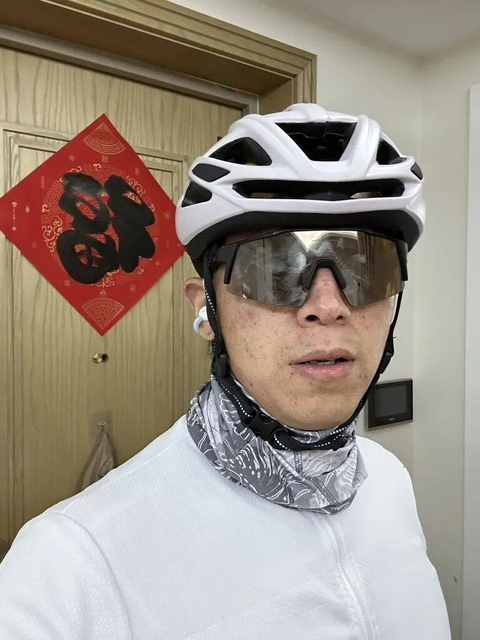
14 点 10：开启下午的工作
如果没有特别的工作，就网上冲浪、阅读等
15 点 50：出发接娃
在学校门口要等 10-20 分钟，一般出发前会把当天的维生素、鱼油、B420 喝掉，避免忘掉
16 点 50：回到家，处理杂事
一般会在这个时间把当日份的蛋白粉喝掉
17 点 50：做晚餐+吃饭
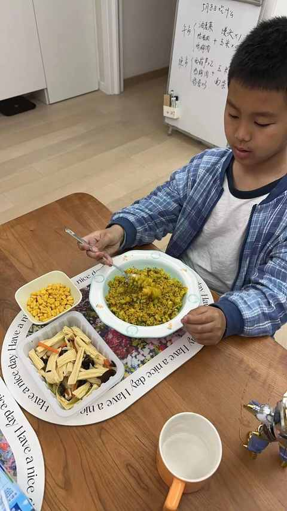
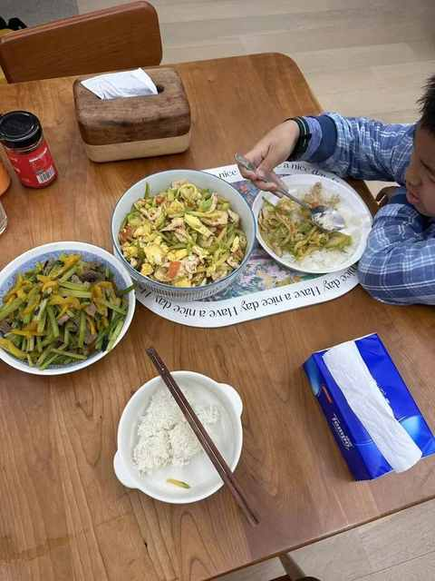
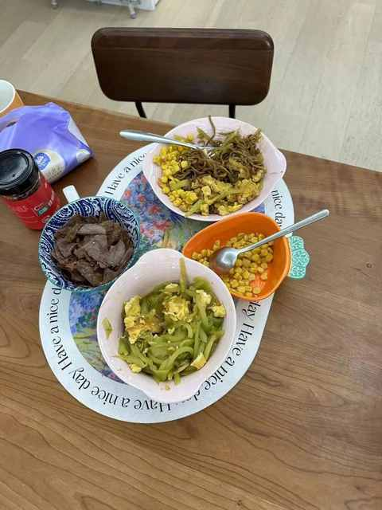
会尽力做到营养均衡，食物保持多样性， 三文鱼+花菜+西兰花炒饭做的偏多，针对挑食的娃实在没有特别好的办法。
18 点 50：打印作业，让娃开始写
小学生的作业真特么不简单啊，在他写作业的时候，会把碗洗掉
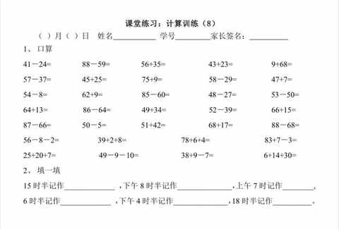
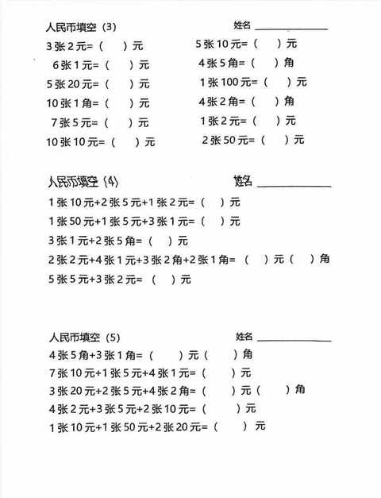
20 点 10： 阅读或干点家务
一般这个时间老婆已经下班回来，在辅导作业
21 点 10： 丢垃圾
22 点 10 ：可能会用泡沫轴放松下腿部肌肉
22 点 30 ：洗澡睡觉
23 点 30 ：关灯